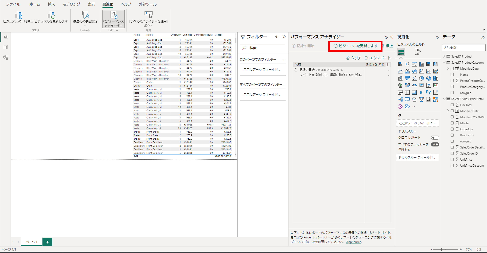
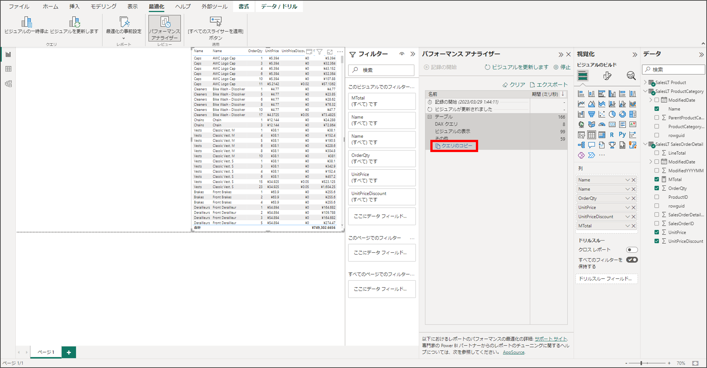
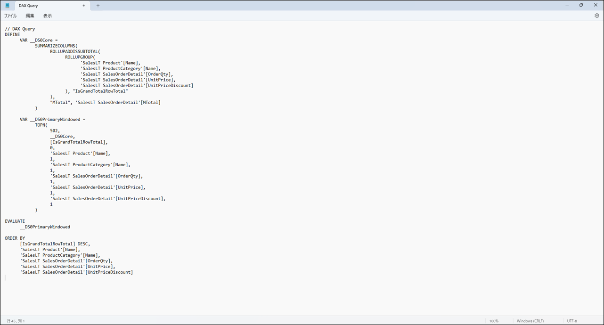
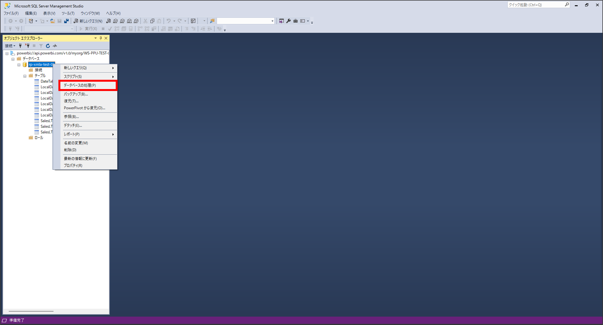
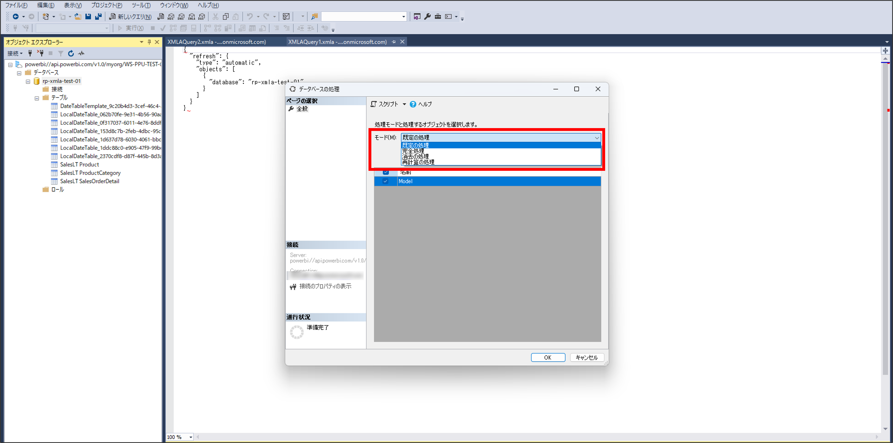
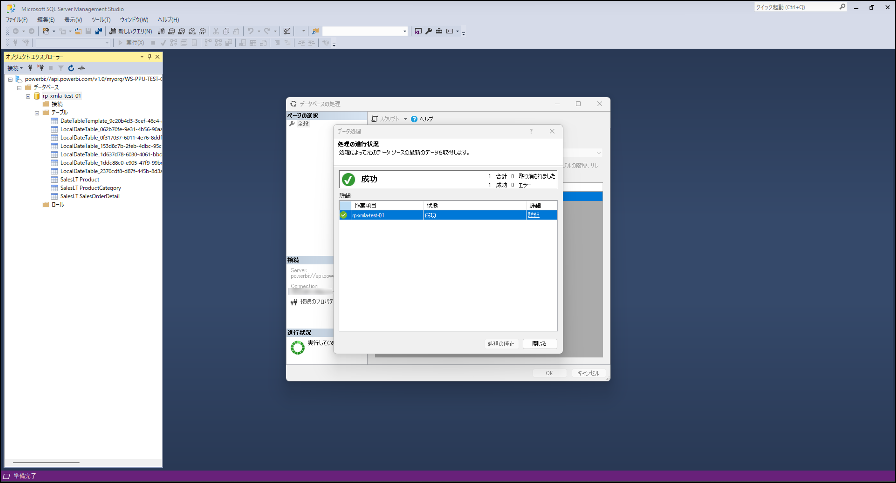

こんにちは、Power BI サポート チームの亀田です。
Power BI Premium Per Capacity または Premium Per Userでは、XMLAエンドポイントを使用してデータセットに接続したり、更新したりすることができます。今回は ｢XMLAエンドポイント｣ について説明します。
重要
本記事は弊社公式ドキュメントの公開情報を元に構成しておりますが、
本記事編集時点と実際の機能に相違がある場合がございます。
最新情報につきましては、参考情報として記載しておりますドキュメントをご確認ください。
目次
XMLAエンドポイント とは
XMLAとは、 XML for Analysis の略称で、Microsoft Analysis Services エンジンによって使用される通信プロトコルを指します。Excel や SSMS といったクライアント アプリケーションとPower BI のワークスペース･データセットを管理するエンジンとの間の通信には、この XMLA プロトコルが使用されます。これらの接続は、一般的に XMLA エンドポイントと呼ばれるものを経由します。
Power BI の設定では、規定で設定されている “読み取り専用” の接続により、クエリを実行してデータを取得できるほか、”読み取り/書き込み” の接続によりデータセットを更新することも可能となります。また、XMLAエンドポイントでの更新は、Power BIの更新上限 (Premiumでは48回/日) にはカウントされないといったメリットがあります。
XMLAエンドポイントの設定
Power BI でXMLAエンドポイントを利用するためには、以下の設定を行います。それぞれの設定を変更するには、Power BI 管理者や、Premium容量の管理者である必要がありますのでご留意ください。
- テナント設定からXMLAエンドポイントの設定を有効化する
- XMLAエンドポイントの設定 (Power BI Premium Per Capacity)
- XMLAエンドポイントの設定 (Power BI Premium Per User)
テナント設定からXMLAエンドポイントの設定を有効化する
テナントでXMLAエンドポイントを有効化するには、管理ポータルにアクセスし、 [テナント設定] > [統合の設定] > [XMLAエンドポイントとオンプレミスのデータセットによる “Excelで分析” の許可] を有効化します。
XMLAエンドポイントの設定 (Power BI Premium Per Capacity)
XMLAエンドポイントは規定では “読み取り専用” に設定されていますが、無効化したい場合や、”読み取り/書き込み” に設定を変更したい場合は、以下の手順で設定を変更します。
管理ポータルを開き、 [容量の設定] から容量を選択します。
[ワークロード] > [XMLA エンドポイント] の設定を変更します。
XMLAエンドポイントの設定 (Power BI Premium Per User)
Power BI Premium Per UserでXMLAエンドポイントの設定を変更したい場合は、以下の手順になります。
管理ポータルを開き、 [Premium Per User] > [データセットのワークロード設定] > [XMLA エンドポイント] の設定を変更します。
SQL Server Management Studio (SSMS) からの接続
以下の手順により、SQL Server Management Studio (SSMS) からワークスペースへ接続します。SSMSは、以下のリンクより無償でダウンロードいただくことが可能です。
Note
参考# SQL Server Management Studio (SSMS) のダウンロード - SQL Server Management Studio (SSMS) | Microsoft Learn
1.ワークスペースの接続 URL の取得
ワークスペースの [設定] > [プレミアム] > [ワークスペース接続] で [コピー] を選択します。
2.SSMSからの接続
SQL Server Management Studio を開き、 [接続] > [サーバーに接続] を選択します。
以下のように設定したら、 [接続] を選択します。
| 項目 | 設定 |
|---|---|
| サーバーの種類 | Analysis Services |
| サーバー名 | 手順1で取得したワークスペースの URL |
| 認証 | Active Directory - MFA で汎用 |
| ユーザー名 | Power BI にサインインするユーザー ID |
必要な権限のあるユーザーが接続に成功すると、ワークスペースに存在するデータセットが表示されます。
セキュリティ
サインインするユーザーに割り当てられているロールが Analysis Services の権限と対応しており、それによってXMLAエンドポイントを使用して行える操作が異なります。以下がそれを整理した表になります。
| Power BI アクセス許可 | Analysis Services権限 | 実際の動作 |
|---|---|---|
| Power BIビューアー | Analysis Services権限ないユーザー | データベース（データセット）を参照できない |
| Power BI共同作成者・メンバー・管理者 | Analysis Servicesデータベース管理者 | 新しいデータセットを配置し、SSMS で TMSL スクリプトを実行することができます。 |
| データセットのビルドアクセス | Analysis Services データベース閲覧者 | データの使用と視覚化のためにデータセットに接続し、データセットを参照できます。 行レベル セキュリティ (RLS) 規則が適用され、内部データセットのメタデータを参照することはできません。 |
実際の動作は以下のようになります。
＜XMLAエンドポイントに接続できるが、データセットに接続できない＞
（ビューアー権限）エンドポイントまたは接続できていますが、データベースの配下に何も表示されません。
＜XMLAエンドポイントに接続できて、データセットに接続できている状態（ReadまたはRead/Write）＞
（共同作成者・メンバー・管理者の権限）エンドポイントまたは接続できていて、データベース配下にテーブル（データセット）が表示されています。
XMLAエンドポイントの利用
これまでXMLAエンドポイントの設定について説明してきましたが、実際の活用方法についていくつかご紹介します。
XMLAエンドポイントを利用したエクスポート
XMLAエンドポイントへ接続し、PowerShellのコマンドを利用してデータをエクスポートすることが可能です。
Power BI内部で利用しているクエリを実行して取得することができますので、データセットに存在する列のみでなく、メジャーを利用した計算結果を取得することも可能です。
以下に取得方法を説明します。
クエリの取得
Power BI Desktopのパフォーマンス アナライザーを利用して、利用しているクエリを取得します。
- Power BI Desktopを開き、 [パフォーマンス アナライザー] を実行し、**[記録の開始]** を選択します。
[ビジュアルを更新します] を選択します。レポート内のビジュアルが更新されます。
各ビジュアルの更新時間が表示されます。 [クエリのコピー] を選択します。
メモ帳などに [貼り付け] して保存しておきます。

コマンドの作成
PowerShellで実行するコマンドを作成します。動作確認のために使用しているPowerShellの環境は以下になります。
1 | PS C:\Windows\System32> $PSVersionTable |
Visual Studio Codeやメモ帳などお好みのエディタから以下のコードを入力し、.ps1ファイルとして保存します。検証のためユーザー名とパスワードを平文で含めていますが、セキュリティの観点からこのまま利用することは避け、実運用時には別ファイルから取得するなどの構成としてください。
1 | [System.Reflection.Assembly]::LoadWithPartialName("Microsoft.AnalysisServices.AdomdClient") |
注意するべき点として、取得したクエリ内に “” (ダブルクオーテーション) が含まれる場合には ` (バックスラッシュ) でエスケープする必要があります。例えば取得したクエリが以下の場合、
1 | DEFINE |
このように記載する必要があります。
1 | $Query = |
作成したコマンドを実行することで、指定したパスに.csvファイルが出力されます。
1 | PS C:\Windows\System32> C:\PBISAMPLE\xmla-export-sample.ps1 |
生成された.CSVファイル
XMLAエンドポイントを利用したデータセットの更新
XMLAエンドポイントを利用することで、データセットの更新が行うことができます。XMLAエンドポイントでの更新は、Power BIの更新上限 (Premiumでは48回/日) にはカウントされないため、頻繁にデータセットを更新する必要がある場合にご利用いただけます。
SSMSを利用したデータセット更新
SSMSを利用してデータセット更新について説明します。
更新したいデータセットを右クリックし、 [データベースの処理] を選択します。
モードを選択します。今回は例として”完全更新”を選択します。 [OK] をクリックし、更新を実行します。
それぞれのモードは以下の処理を表します。
モード 説明 既定の処理 データベース オブジェクトの処理状態を検出し、処理されていないオブジェクトや部分的に処理されたオブジェクトを完全処理状態にするために必要な処理を行います。 空のテーブルとパーティションのデータが読み込まれ、階層、計算列、およびリレーションシップが構築または再構築 (再計算) されます。 完全処理 データベースとそのデータベースに含まれるすべてのオブジェクトを処理します。 既に処理されているオブジェクトに対して完全処理を実行すると、SQL Server Analysis Servicesオブジェクト内のすべてのデータが削除され、そのオブジェクトが処理されます。 この種の処理は、構造上の変更をオブジェクトに加えた場合に必要となります。 このオプションは最も多くのリソースを必要とします。 消去の処理 データベース オブジェクトからすべてのデータを削除します。 再計算の処理 階層、リレーションシップ、および計算列を更新して再計算します。 更新が成功したことを確認します。

手順2で [スクリプト] を選択すると、更新のためのTMSLスクリプトが表示されます。
1 | { |
生成されたTMSLスクリプトは、SQL Server Agent ジョブや、SQL Server Integration Services(SSIS)、PowerShellのInvoke-ASCmdコマンドからの実行が可能です。例えば、SQL Server Agent ジョブを設定することで、スケジュール更新を行うことや、SSISでのETL処理後にデータセットを更新するといったことが可能となります。
また、データセットをすべて更新する以外にも、テーブルを更新することや、パーティションを更新することが可能です。データセットに増分更新を設定している場合は、パーティション単位での更新を行うことで、更新範囲を限定することができ、更新のパフォーマンスを向上させることができます。
テーブルを更新したい場合には、更新したいテーブルを右クリックし、 [テーブルの処理] を選択します。
処理モードと処理するオブジェクトを選択し、更新を行います。
また、パーティションを更新したい場合には、更新したいパーティションを右クリックし、 [パーティション] を選択します。
[処理] を選択します。
処理モードと処理するオブジェクトを選択し、更新を行います。
テーブルやパーティションの更新についても、同様にTMSLスクリプトでの更新が可能です。
1 | // テーブルの更新 |
増分更新やパーティションについて、以下の公開情報やブログをご確認ください。
Note
参考# Power BI でのデータセットの増分更新とリアルタイム データ - Power BI | Microsoft Learn
参考# Power BI での XMLA エンドポイントを使用した高度な増分更新およびリアルタイム データ - Power BI | Microsoft Learn
参考# 増分更新の概要と設定方法 | Japan CSS Support Power BI Blog (jpbap-sqlbi.github.io)
PowerShellを利用したデータセット更新
PowerShellからの更新の例として、Invoke-ProcessASDatabaseを利用したデータセット更新について説明します。
SQL Server PowerShell モジュールのインストールがされていない場合には、以下のコマンドでインストールを行います。
1 | PS C:\Windows\System32> Install-Module -Name SqlServer |
インストール後、以下のコマンドを実行し、Invoke-ProcessASDatabase が含まれていることを確認します。
1 | PS C:\Windows\System32> Get-Command -Module sqlserver |
含まれていない場合には、以下のコマンドを実行し、プレビュー版のインストールを行います。
1 | PS C:\Windows\System32> Install-Module -Name SqlServer -AllowPrerelease -Force |
再度以下のコマンドを実行し、Invoke-ProcessASDatabase が含まれていることを確認します。
1 | PS C:\Windows\System32> Get-Command -Module sqlserver |
インストールが完了したら、Visual Studio Codeやメモ帳などお好みのエディタから以下のコードを入力し、.ps1ファイルとして保存します。こちらも、検証のためユーザー名とパスワードを平文で含めていますが、セキュリティの観点からこのまま利用することは避け、実運用時には別ファイルから取得するなどの構成としてください。以下の例では、データセットの完全更新を行います。
1 | Import-Module SqlServer -Version 22.0.49 |
作成したコマンドを実行することで、データセットの更新が行われます。
1 | PS C:\Windows\System32> C:\PBISAMPLE\xmla-refresh-sample.ps1 |
テーブルを更新する場合やパーティションを更新する場合には以下のコードとなります。
1 |
|
データセットのバックアップ･復元
大きいデータセットのストレージ形式や増分更新を設定したデータセット、XMLAエンドポイントを利用して変更されたデータセットはダウンロードすることができませんが、SSMSからXMLAエンドポイントを利用することでバックアップや復元が可能となります。
バックアップ
バックアップを行う前に、ワークスペースにAzure Data Lake Storage Gen2を接続しておく必要があります。
設定が完了したら、SSMSでデータベースを右クリックし、 [バックアップ] を選択します。
バックアップが完了すると、接続されたAzure Data Lake Storage Gen2に.adfファイルが保存されます。
復元
データセットを復元するには、SSMSでデータベースを右クリックし、 [復元] を選択します。
復元するファイルを選択します。
XMLAエンドポイントによって、よりPower BIの利用の幅が広がります。Power BI Premiumをご契約いただいていないユーザー様でも、試用版Power BI Premium Userのライセンスのご利用で本機能をお試しいただけます。
以上、本ブログが少しでも皆さまのお役に立てますと幸いでございます。
※本情報の内容（添付文書、リンク先などを含む）は、作成日時点でのものであり、予告なく変更される場合があります。